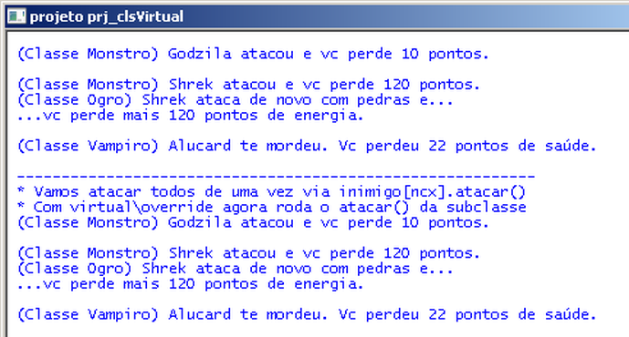

Gameprog - Escola de programação de jogos digitais
Contato: gameprog.br@gmail.com
Fase 06-3
| index | << | >> |
06-3 Classe virtual
1. Visão geral  A classe virtual contém métodos virtuais que podem ser extendidos ou totalmente redefinidos pelas subclasses. Na classe base, o método que vai ser qualificado para ser extendido ou redefinido deve ser assinalado com o modificador virtual. Na subclasse, a assinatura do método deve trazer o modificador override. O uso do método virtual é necessário para que na ocasião do polimorfismo, isto é, quando uma array do tipo do objeto base for receber os diferentes objetos das subclasses, o programa em execução possa chamar respectivamente o método correto da subclasse. Já vimos que, sem o uso da classe virtual, ainda que o método tenha sido redefinido na subclasse, o método da base é chamado quando chamado pela variável do tipo array. 2.1 Definindo o método como virtual na classe base// atacar() public virtual void atacar() { string msg = ""; msg = " (Classe Monstro) {0} atacou "; Console.Write(msg, m_nome); msg = "e vc perde {0} pontos."; Console.WriteLine(msg, m_estrago); } // atacar().fim2.2 Refinindo ou extendendo método com override nas subclassespublic override void atacar() { string msg = ""; Console.Write("\n"); // Vamos aproveitar o trabalho anterior! base.atacar(); msg = " (Classe Ogro) {0} ataca de novo com pedras e..."; Console.WriteLine(msg, m_nome); msg = " ...vc perde mais {0} pontos de energia.\n"; Console.WriteLine(msg, m_estrago); }// atacar().fimNesse primeiro bloco o método original foi extendido porque chamamos a sua funcionalidade anterior com base.atacar(). Na melhor situação, seria ideal aproveitar o trabalho desempenhado pela classe base.// O Vampiro morde no ataque! public override void atacar() { string msg = ""; msg = " (Classe Vampiro) {0} te mordeu."; Console.Write(msg, m_nome); msg = " Vc perdeu {0} pontos de saúde.\n"; Console.WriteLine(msg, m_estrago); } // atacar().fimNesse segundo bloco o método foi totalmente redefinido em particular para esta classe. Veja agora o código fonte do projeto de exemplo. Note que a classe Ogro aproveitou a funcionalidade anterior da classe base, e a classe Vampiro redefiniu de forma particular o método atacar().// Projeto prj_clsVirtual - Arquivo:Monstro.cs // Ilustra o uso de método virtual using System; namespace prj_clsVirtual { class Monstro { // atributos public int m_estrago; // capacidade de fazer estrago public string m_nome; // nome do objeto // Construtor 01 Mostro() public Monstro() { m_estrago = 10; m_nome = "monstro"; } // fim do Construtor 01 // Construtor 02 Monstro (int nval) public Monstro(int estrago) { m_estrago = estrago; m_nome = "monstro"; } // fim do construtor 02 // atacar() public virtual void atacar() { string msg = ""; msg = " (Classe Monstro) {0} atacou "; Console.Write(msg, m_nome); msg = "e vc perde {0} pontos."; Console.WriteLine(msg, m_estrago); } // atacar().fim } // fim da classe } // fim do namespace
// Projeto prj_clsVirtual - Arquivo: Ogro.cs // Ilustra o uso de método virtual using System; namespace prj_clsVirtual { class Ogro : Monstro { // Construtor chama construtor da classe base public Ogro() : base(120) { } public override void atacar() { string msg = ""; Console.Write("\n"); // Vamos aproveitar o trabalho anterior! base.atacar(); msg = " (Classe Ogro) {0} ataca de novo com pedras e..."; Console.WriteLine(msg, m_nome); msg = " ...vc perde mais {0} pontos de energia.\n"; Console.WriteLine(msg, m_estrago); }// atacar().fim } // fim da classe } // fim do namespace// Projeto prj_clsVirtual - Arquivo: Vampiro.cs // Ilustra o uso de método virtual using System; namespace prj_clsVirtual { class Vampiro : Monstro { // Construtor chama construtor da classe base public Vampiro() : base(22) { } // O Vampiro morde no ataque! public override void atacar() { string msg = ""; msg = " (Classe Vampiro) {0} te mordeu."; Console.Write(msg, m_nome); msg = " Vc perdeu {0} pontos de saúde.\n"; Console.WriteLine(msg, m_estrago); } // atacar().fim } // fim da classe } // fim do namespace// Projeto prj_clsVirtual - Arquivo: Program.cs // Ilustra o uso de método virtual using System; namespace prj_clsVirtual { class Program { static void Main(string[] args) { config_janela("projeto prj_clsVirtual"); // Vamos criar uma quadrilha de monstros Monstro godzila = new Monstro(); Ogro shrek = new Ogro(); Vampiro alucard = new Vampiro(); // Vamos configurar os nomes godzila.m_nome = "Godzila"; shrek.m_nome = "Shrek"; alucard.m_nome = "Alucard"; // Vamos atacar godzila.atacar(); shrek.atacar(); alucard.atacar(); // Vamos criar uma array de monstros! Monstro[] inimigo = new Monstro[5]; inimigo[1] = godzila; inimigo[2] = shrek; inimigo[3] = alucard; Console.Write(" ----------------------------------------------------------\n"); Console.Write("*Vamos atacar todos de uma vez via inimigo[ncx].atacar()\n"); Console.WriteLine("*Com virtual\\override agora roda o atacar() da subclasse"); for (int ncx = 1; ncx <= 3; ncx++) inimigo[ncx].atacar(); Console.ReadKey(); } // Main().fim // Método para configurar a janela static void config_janela(String titulo) { // Vamos configurar a janela Console.ForegroundColor = ConsoleColor.Blue; Console.BackgroundColor = ConsoleColor.White; Console.Title = titulo; Console.SetBufferSize(80, 30); Console.SetWindowSize(80, 30); Console.Clear(); Console.Write("\n"); } // config_janela() fim } // fim da classe } // fim do namespace
| index | << | >> |
Produzido por Gameprog: Jair Pereira - Março/2014 © gameprog.br@gmail.com http://www.gameprog.com.br